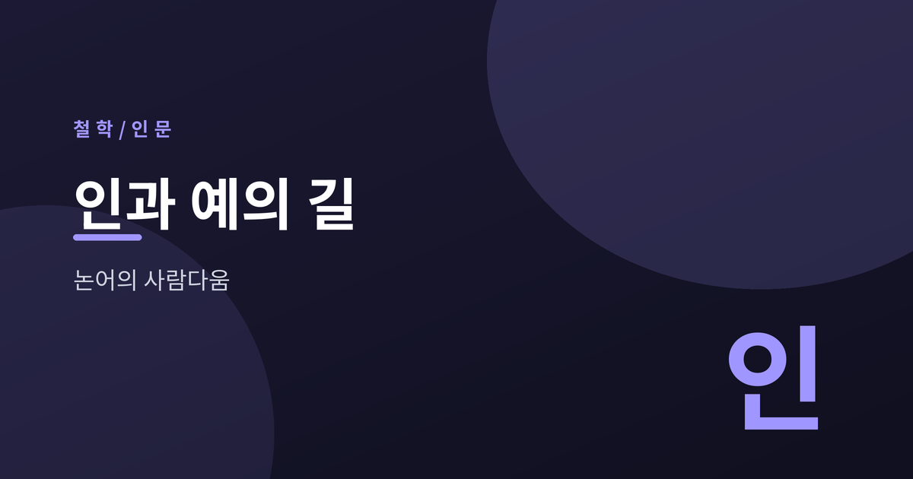
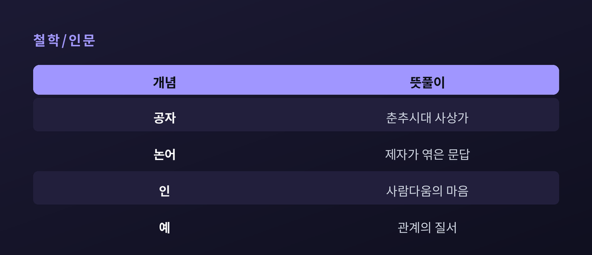
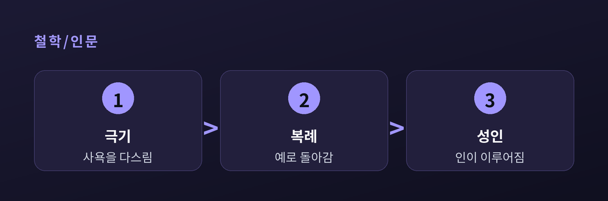
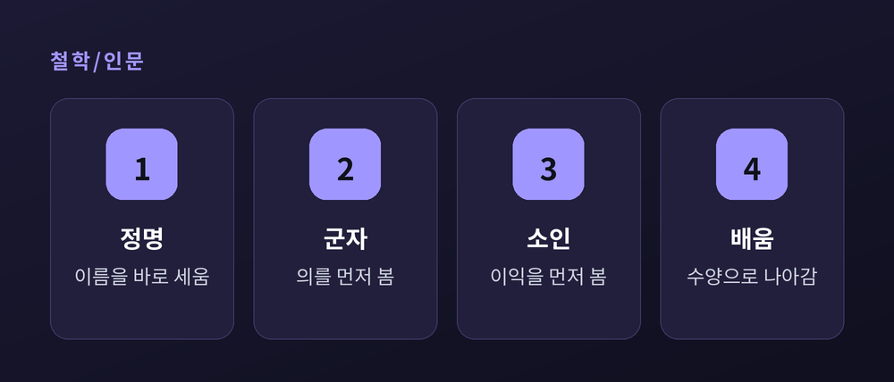

논어, 사람다움의 길

이번 글에서는 공자의 두 기둥, 인(仁, 어짊)과 예(禮, 예의)를 정리해 보겠습니다.
특정 신앙을 옹호하려는 것이 아니라, 사상사와 인문 교양의 눈으로 읽습니다.
낯선 한자어는 뜻을 함께 풀어 적겠습니다.
공자(孔子)는 기원전 6세기, 춘추시대(春秋時代)를 살았습니다.
제후들이 힘으로 다투고 옛 질서가 무너지던 혼란기였습니다.
그는 무력이 아니라 사람의 마음과 도리로 세상을 바로잡으려 했습니다.
그 가르침을 제자들이 뒤에 엮은 책이 『논어(論語)』입니다.
논어는 체계적인 이론서가 아닙니다.
짧은 문답과 일화가 이어지는, 대화의 기록에 가깝습니다.
그래서 논어를 읽는 일은 정답을 외우는 일이 아닙니다.
스승과 제자가 주고받은 물음의 결을 따라가는 일에 가깝습니다.
공자는 신을 논하기보다 사람의 도리를 물었습니다.
그 시선이 뒷날 동아시아 사유의 바탕을 이루었습니다.

인(仁)은 논어 전체를 관통하는 핵심어입니다.
흔히 '어짊'으로 옮기지만, 뜻은 그보다 넓습니다.
글자 그대로 풀면 사람(人)과 둘(二), 곧 사람과 사람 사이의 마음입니다.
타인을 향한 따뜻한 관심, 사람이 사람다워지는 바탕을 가리킵니다.
공자는 인을 한 문장으로 못박지 않았습니다.
묻는 제자와 상황에 따라 답을 달리했습니다.
다만 방향은 한결같습니다.
자기 안에 갇히지 않고 남을 헤아리는 마음, 그것이 인의 출발입니다.
번지가 인을 묻자 공자는 "사람을 사랑하는 것"이라 답했습니다.
거창한 이론이 아니라, 곁에 있는 사람을 아끼는 데서 시작한다는 뜻입니다.
인은 지식이 아니라 실천으로 드러납니다.
말이 앞서고 행함이 없는 사람을 공자는 미덥지 않게 보았습니다.
제자 안연이 인을 묻자 공자는 답합니다.
"극기복례(克己復禮)", 자기를 이겨 예로 돌아가는 것이라고요.
자기(己)를 이긴다는 말은 사욕과 충동을 다스린다는 뜻입니다.
그렇게 다스린 마음이 다시 예로 돌아갈 때 인이 이루어집니다.
인은 멀리 있지 않습니다.
"하루라도 자기를 이겨 예로 돌아가면 천하가 인으로 돌아간다"고 공자는 보았습니다.

예(禮)를 딱딱한 격식으로만 여기기 쉽습니다.
그러나 공자에게 예는 겉치레가 아니었습니다.
예는 사람과 사람 사이의 질서이자 존중의 표현입니다.
상대의 자리를 인정하고, 그에 맞게 대하는 태도입니다.
속이 비면 예는 헛됩니다.
안의 인이 밖으로 드러난 모습이 예이고, 예가 인을 지탱합니다.
예전에는 예를 지키라는 말을 구속으로만 들었습니다.
지금은 그것이 관계를 지키는 배려일 수 있음을 헤아려 봅니다.
공자의 가르침을 관통하는 한 축은 충서(忠恕)입니다.
충(忠)은 자기에게 정성을 다함, 서(恕)는 남의 마음을 헤아려 미루어 봄입니다.
여기서 유명한 한마디가 나옵니다.
"기소불욕 물시어인(己所不欲 勿施於人)", 내가 원치 않는 것을 남에게 하지 말라는 것입니다.
동서양의 이른바 황금률과 맞닿는 원칙입니다.
거창한 규범이 아니라, 나를 잣대로 남을 헤아리는 자리에서 시작합니다.
한 제자가 평생 지킬 한마디를 청하자 공자는 서(恕)를 꼽았습니다.
남을 나처럼 미루어 보는 마음 하나면 충분하다고 본 것입니다.
정명(正名)은 이름을 바로 세운다는 뜻입니다.
임금은 임금답고 신하는 신하다워야 한다는, 이름과 실질을 맞추려는 요구입니다.
공자는 사람을 군자(君子)와 소인(小人)으로 견주기도 했습니다.
군자는 의(義)를 먼저 보고, 소인은 이익(利)을 먼저 봅니다.
다만 군자는 타고나는 신분이 아닙니다.
배움(學)과 수양으로 다가서는 자리입니다.
"배우고 때때로 익히면 또한 기쁘지 아니한가."
논어의 첫 문장은 그렇게 배움을 삶의 기쁨으로 놓습니다.

정리하면 이렇습니다.
인은 사람을 향한 마음이고, 예는 그 마음이 관계 속에 드러난 질서입니다.
공자가 남긴 물음은 오늘도 유효합니다 — "나는 사람다운가."
그 물음을 스스로에게 건네는 순간, 논어는 다시 열립니다.